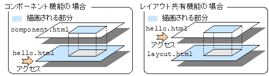
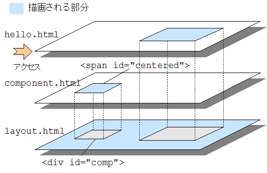
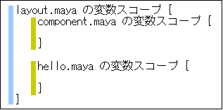

2-8. レイアウト共有機能を使う
デザインを統一する手間や全体的な変更をする際の手間を小さくするため、、複数のページでレイアウトを共有したいことがあるでしょう。Maya では、レイアウト用のテンプレートを用意し設定することで、そのレイアウトを複数のテンプレートで共有できます。
Maya のレイアウト共有機能は、コンポーネント機能の主従関係を逆転させたものだと考えると理解しやすいでしょう。主となるページがコンポーネントとして振る舞い、自分というコンポーネントを使用する「親ページ」を指定します。Web ブラウザによって直接アクセスされるのは主となるページですから、コンポーネントを使う場合とちょうど逆転する形になります。

簡単な例
まずは簡単な例として、コンポーネントの例を逆転させてレイアウト共有機能を使ってみましょう。レイアウトを定義しているテンプレートを maya タグの m:extends 属性で指定します。
hello.html<html> <body> <h1>DummyTitleHello</h1> <div id="content">Hello Maya!</div> </body> </html>hello.maya<?xml version="1.0" encoding="ISO-8859-1"?> <m:maya xmlns:m="http://maya.seasar.org" extends="/layout.html"> <m:doRender id="content" name="contentBody" /> </m:maya>layout.html<html> <body> <h1>Hello</h1> <div id="contentPosition">Dummy content</div> </body> </html>layout.maya<?xml version="1.0" encoding="ISO-8859-1"?> <m:maya xmlns:m="http://maya.seasar.org"> <m:insert id="contentPosition" name="contentBody" /> </m:maya>
コンポーネントの例と違う点は次の 4 点です。
- アクセスされる
hello.htmlでdoRenderプロセッサを使っている - 使われる側の
layout.htmlでinsertプロセッサを使っている insertプロセッサにpath属性を指定していないhello.mayaでextends属性を使っている
ブラウザで http://localhost:8080/maya/hello.html にアクセスしてみましょう。
実行結果<html> <body> <h1>Hello</h1> Hello Maya! </body> </html>
実行結果は、レイアウトを定義している layout.html の <div id="contentPosition"> が、アクセスされた hello.html の <span id="content"> のボディによって置き換えられたものになっています。元のタグを出力するかどうかはコンポーネント同様 replace の値に従いますので、この例ではどちらのタグも出力されません。
レイアウトを変更する
動作を見るため、試しにレイアウトを変更してみましょう。<h1> と <div> の順番を入れ替えてみます。
layout.html<html> <body> <div id="contentPosition">Dummy content</div> <h1>Hello</h1> </body> </html>実行結果<html> <body> Hello Maya! <h1>Hello</h1> </body> </html>
内容を持つ hello.html を変更することなく、レイアウトの変更が反映されましたね。このように、レイアウトページを変更するだけで簡単にレイアウトを変更できます。
レイアウトページの置き換え場所を複数指定する
レイアウトの置き換え場所 (insert プロセッサを置くところ) を複数指定することもできます。置き換え場所を区別するには、コンポーネントを複数作るときと同様に名前を使います。
hello.html<html> <body> <h1>DummyTitleHello</h1> <div id="content1">Hello Maya! 1</div> <div id="content2">Hello Maya! 2</div> </body> </html>hello.maya<?xml version="1.0" encoding="ISO-8859-1"?> <m:maya xmlns:m="http://maya.seasar.org" extends="/layout.html"> <m:doRender id="content1" name="position1" /> <m:doRender id="content2" name="position2" /> </m:maya>layout.html<html> <body> <h1>Hello</h1> <div id="contentPosition1">Dummy content 1</div> <div id="contentPosition2">Dummy content 2</div> </body> </html>layout.maya<?xml version="1.0" encoding="ISO-8859-1"?> <m:maya xmlns:m="http://maya.seasar.org"> <m:insert id="contentPosition1" name="position1" /> <m:insert id="contentPosition2" name="position2" /> </m:maya>実行結果<html> <body> <h1>Hello</h1> Hello Maya! 1 Hello Maya! 2 </body> </html>
レイアウトページにコンポーネントを追加する
レイアウト共有機能では、レイアウトに限らず画面の一部を共有することもできます。次はレイアウトページにコンポーネントを埋め込んでみましょう。使い方は普通のページからコンポーネントを使う場合と同じです。
hello.html<html> <body> <h1>DummyTitleHello</h1> <div id="content">Hello Maya!</div> </body> </html>hello.maya<?xml version="1.0" encoding="ISO-8859-1"?> <m:maya xmlns:m="http://maya.seasar.org" extends="/layout.html"> <m:doRender id="content" name="contentBody" /> </m:maya>layout.html<html> <body> <h1>Hello</h1> <div id="comp">Dummy component</div> <div id="contentPosition">Dummy content</div> </body> </html>layout.maya<?xml version="1.0" encoding="ISO-8859-1"?> <m:maya xmlns:m="http://maya.seasar.org"> <m:insert id="comp" path="/component.html" /> <m:insert id="contentPosition" name="contentBody" /> </m:maya>component.html<html> <body> <h1>dummy for preview</h1> <span id="centered"> <div style="text-align: center">component value</div> </span> </body> </html>component.maya<?xml version="1.0" encoding="ISO-8859-1"?> <m:maya xmlns:m="http://maya.seasar.org"> <m:doRender id="centered" /> </m:maya>実行結果<html> <body> <h1>Hello</h1> <div style="text-align: center">component value</div> Hello Maya! </body> </html>
レイアウトページを使う側は、特にコンポーネントを意識しません。レイアウトページの一部だと考えれば良いだけですので、違和感なく使えます。

レイアウト共有時の変数スコープ
レイアウト共有機能を使う場合の変数スコープは、コンポーネントの場合と同様です。つまり、一番下になるレイアウトページが一番外側のスコープになります。ここはちょっと直感に合わないかもしれませんが、レイアウトページを使う側はレイアウトページの変数スコープの内側で動く形になります。
レイアウトページでコンポーネントを利用するサンプルの変数スコープは、maya ファイル単位で考えると図 2-8-3 のようになります。
